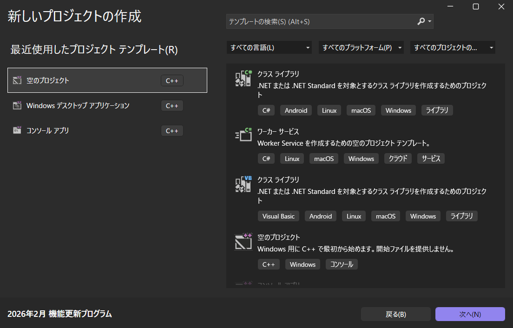
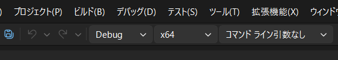
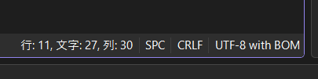

ばた～の部屋
DxLibを立ち上げて描画させてみた
最終更新日 2026/02/26
★本記事ではDxLibを導入し、四角形などの図形を表示させるまでを目標としています
参考にした関数リファレンスサイトはこちらDxLibの導入
まずはこちらからDxLib本体をダウンロードします。なお本記事では、『Windows版のVisualStudio( C++ )用(Ver3.24f)』で話を進めていきます。
ダウンロード出来たらCドライブで展開します。[※1]
プロジェクトの作成
展開できたら、次にVisualStudioでの設定を行います。今回は『空のプロジェクト[C++]』を使ってプロジェクトを作成します。
テンプレートの検索に入れると出てきます。

プロジェクトの名前とプロジェクト位置は任意のものOKです。
プロジェクトの設定
さて、次にめんどくさ～いプロジェクトの設定を行います。手順は以下の通りです
1.ソースファイルに1つcppファイルを作っておきます(私はMain.cppを作りました)
2.先ほど作ったプロジェクトの上部タブ「プロジェクト(P)→プロパティ(P)」を開きます。
3.構成→すべて、プラットフォーム→すべて にして、詳細→文字セット→マルチバイト文字セットを使用するに設定。
4.構成→すべて、プラットフォーム→すべて にして、C/C++→全般→追加のインクルードディレクトリ→【C:\DxLib_VC3_24f\DxLib_VC\プロジェクトに追加すべきファイル_VC用】を設定します。[※2]
5.構成→すべて、プラットフォーム→すべて にして、リンカー→全般→追加のライブラリディレクトリに4と同じように設定します。
6.構成→すべて、プラットフォーム→すべて にして、リンカー→システム→サブシステムをWindowsに変更します。
7.適用してプロパティページを閉じます。
8.x86になっている場合はx64に直します。

9.最後にコード右下をクリックして、エンコード付きで保存→日本語対応しているUTF-8 with BOMに変更します。

これにて設定完了です。
実際に最低限のコードを書いてテストしてみます。
コードのテスト
DxLibを起動して黒画面を表示させるコード
#include "DxLib.h"
int WINAPI WinMain(_In_ HINSTANCE hInstance, _In_opt_ HINSTANCE hPrevInstance, _In_ LPSTR lpCmdLine, _In_ int nShowCmd)
{
SetGraphMode(1080, 720, 32);
ChangeWindowMode(TRUE);
if (DxLib_Init() == -1)
{
return -1;
}
WaitKey();
DxLib_End();
return 0;
}ふむ...こうやってウィンドウが作られている訳ですね。
四角形の描画
ではウィンドウ表示も無事にできたところで、四角形を描画してみます。今回はただの四角形なので、DrawBox()を使っていきます。
どうやらウィンドウの左上が(0,0)で、右下が自分で設定したサイズ(width,height)の座標になっているようです。
今回は(100,100)から(max-100,max-100)にかけて四角形を黄色で描いてみます。
黄色い四角形を描くコード
#include "DxLib.h"
int WINAPI WinMain(_In_ HINSTANCE hInstance, _In_opt_ HINSTANCE hPrevInstance, _In_ LPSTR lpCmdLine, _In_ int nShowCmd)
{
SetGraphMode(1080, 720, 32);
ChangeWindowMode(TRUE);
if (DxLib_Init() == -1)
{
return -1;
}
DrawBox(100, 100, 980, 620, GetColor(255, 255, 0), TRUE);
WaitKey();
DxLib_End();
return 0;
}黄色の四角形を描けました！

これにて一旦は動作確認が終わりましたので、次からは少しずつゲームを制作していきたいと思います。
注釈について
※1 パスの読み込み時に影響のない場所を選びました。長すぎたり、OneDriveと同期していたりすると正常に動かない場合があります。
※2 DxLibを展開したフォルダの中に、VC用というフォルダがあるので、そのフォルダのパスをコピーします。
※2 DxLibを展開したフォルダの中に、VC用というフォルダがあるので、そのフォルダのパスをコピーします。